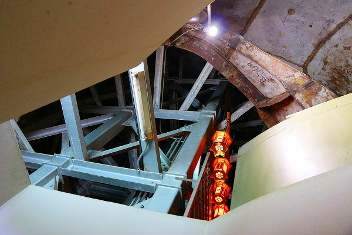

青森市にある
昭和大仏。
17年ぶりに再訪しましたよ。
かつて訪れた頃はヤル気に満ち過ぎていて、若干うさん臭い雰囲気だったのが、今ではいい塩梅に落ち着いた印象。
もっとも、当時は私も
血気盛んなお年頃だったので、いちいち細かい事に咬みついたりしていたので、お互い様な訳なのだが。
いや、そんな事ないか。一方的に咬みついてましたすみませんですはい。
…という訳で以前のレポートはざっくり削除させていただき、2014年に再訪したレポートをお届けさせていただきますよ。
お寺の名称は
青龍寺。
お寺に着くと最初に現れるのが
大師堂。
高野山青森別院でもある。
RC（鉄筋コンクリート）造らしい自由な造型。１階にも2階にもダブルで唐破風が切ってある辺りがこの寺の勢いを如実に表している。
ここから先は有料ゾーン。
正面に金堂が見える。
内部では素敵な壁画を堪能できる。
。
開山堂の手前にはこの寺の開祖の像が。
その傍らには
棟梁の銅像まで立っていた。
余程この寺院に貢献した人なのだろう。
青森ヒバ造りの見事な五重塔。
日本第四位の高さだそうです。
年間フリーパス制度も相変わらず健在でした。
境内には風車が大量に捧げられている。
この辺は恐山を有する青森らしい光景だ。
そんなこんなで本命の
昭和大仏が見えてくる。
おおお、大きいぞ。
大仏さんの前には護摩殿が建設中。
にしても大きな大仏さんである。
青銅製で昭和59年建立。高さ21.35ｍ。
奈良、鎌倉の大仏をも凌ぐ大きさである。
厳しい冬の寒さに耐えながら、一生懸命生き抜いてきた感が見て取れる大仏さんだなあ。
台座の後から中に入れるのですね。
遠慮なくお邪魔します！
内部は円周状の展示スペースになっていた。
最初に現れるのは地獄絵図。
陰惨な地獄絵が延々と並ぶ。
気になったのが、上にある鋳物仕立てのメッセージ
判ったような判らないような医学界への提言。
やたら
不具者というワードが頻発するのが気になりました。
あと、奉納した人達が遠方なのもチョット気になりました。
気になっただけです。はい。
地元の小学生による木版画。
力作ですね。
その先は十二支守り本尊が壁面に架けられていた。
昭和大仏建立プロセスのパネル展示もあった。

ベーリーカッコイイ写真。
一応ここの本尊なのだろう。
昭和大仏の縮小されたレプリカが安置されてましたよ。
このように、一階ではある程度整然とした展示が展開されていた。
ところが二階に登ると様子は一転する。
むき出しの台座部分が目の前に繰り広げられ、そのマッス感に圧倒される。
2階のメインは
殉国英霊。
戦死した英霊を供養するスペースだ。
この昭和大仏の建立目的は戦没者の慰霊と世界平和と仏法興隆にあるという。
昭和の末期に建てられた大仏としては戦没者の慰霊はやや珍しいかな、という印象があった。
上を見上げれば鉄骨や鋳造パーツがむき出しになっており、外から見たエレガントな雰囲気とは全く違った様子が伺える。

遠目に見たら大きな仏像なのだが、こうして内側から見ると工業生産物そのもの。
出来ればこの蜘蛛の巣のような鉄骨の間を縫って胎内巡りがしてみたい！
てなギャップが大仏胎内の醍醐味なのだ。
境内にはお砂踏み霊場などもあり、参拝客を飽きさせない努力に満ちていた。
とは言え年間パスを買う人がどれだけいるのかは判らないが…。
さて。
この大仏が建立されたのは1984（昭和59）年。所謂バブル前夜である。
この頃、日本の大仏界には大きな変換期が訪れている。
それは
大仏の工法の変化である。
昭和初期から高度経済成長期までの間、日本の大仏界を席巻していたのは鉄筋コンクリート造による
「より大きく、より高く」という上方指向だった。
ところが、昭和末期辺りから状況が変化しはじめる。
不格好なコンクリ大仏を造るくらいなら
サイズを落としてでも精緻な大仏を建立したい、というニーズが高まってきたのだ。
その後、やや粗削りなコンクリ大仏の勢いは衰え、精緻な鋳造製大仏やコンクリ大仏にしても施工術を駆使した精緻なコンクリ大仏や大観音が次々と登場する。
つまり量より質の時代へと変化したのだ。
この昭和大仏を含めた昭和末期～平成初期の幾つかの大仏の有様がその後の日本の大仏界のムーブメントを左右した事は間違いないと思う。
そういう意味では世間の注目度はあまり高くないが、大仏史観的には見過ごす事の出来ない大仏なのだ。